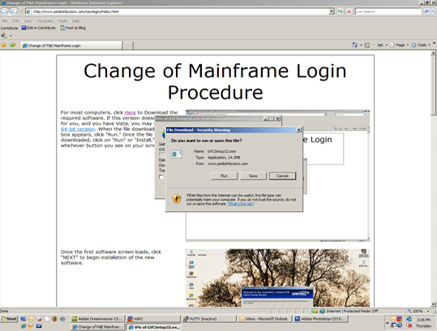
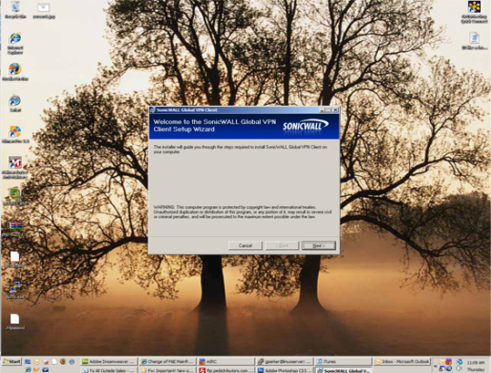
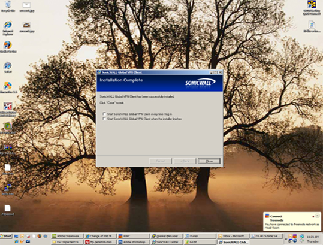
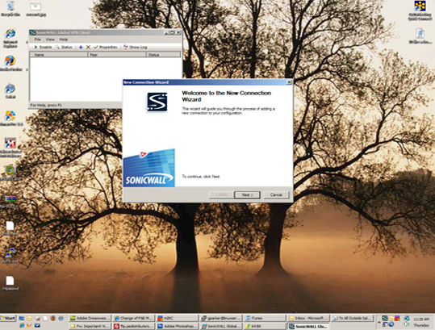
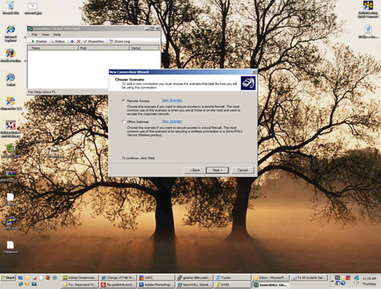
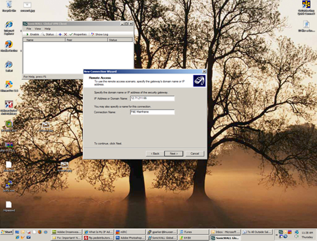
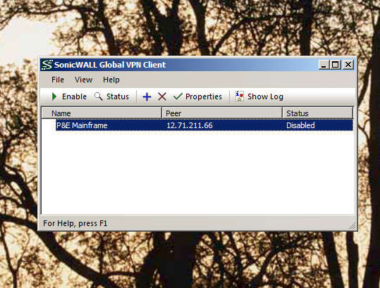
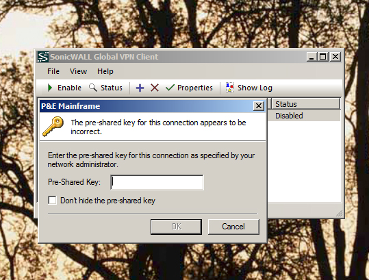

| Change of Mainframe Login Procedure | |
| For most computers, click Here to Download the required software. If this version doesn't work for you, and you have Vista, you may need the 64-bit version. When the file download dialog box appears, click "Run." Once the file has downloaded, click on "Run" or "Install," whichever button you see on your screen. |  |
| Once the first software screen loads, click "NEXT" to begin installation of the new software. |  |
| Once the first software screen loads, click "NEXT" to begin installation of the new software. Click through the next few screen to choose installation folder, and other options, and then finally click "Next" to begin copying files. Sonicwall will now install necessary components. | |
| At the "Installation Complete" screen, leave both of these boxes UNCHECKED. Click "Close" to complete the installation. |  |
| Click on your start button and find the program labeled "Sonicwall Global VPN Client." A new screen will appear titled "Welcome to the New Connection Wizard." Click "Next" to begin configuration. |  |
| On the following screen, you will be asked what type of connection you are trying to establish. You will need to pick the first choice titled "Remote Access." Select this option and click "Next." |  |
| On this screen, enter the following exactly as seen here into the top box labeled "IP Address or Domain Name." Enter "store.pedistributors.com" (without the quotes) into the top box. In the bottom box (labeled "Connection Name"), enter any name you would like. I chose "P&E Distributors Mainframe," but you may put whatever you find suitable. Click "Next." On the following screen, check the box labeled "Create a desktop shortcut for this connection," and click "Finish" to complete installation. |  |
| **The following 2 steps will have to be completed every time you wish to connect to the mainframe.** You should now see a screen that looks like this. This will be the same screen you see when you double click the icon that was just created on your desktop. Mine is called "Connection to P&E Mainframe." Prior to attempting to connect to the mainframe, you will need to open this program, highlight the connect by clicking on in once, and pressing the button above it labeled "Enable." |  |
| You will now be asked for a "Pre-Shared Key." Enter these numbers for Pre-Shared Key: A6E913B4DC4117FA . After entering your pre-shared key, you will be prompted for a Username and Password, which will be unique for each user. These login credentials have been emailed to each of you separately in an email titled "P&E Network Login." Once you have entered the proper login, you will be connected to the network and will be able to access the mainframe server through your existing terminal program. If you are using AccuTerm to connect, click here for instructions on changing your configuration. If you are using another software, click here for generic information that may apply to you. |  |